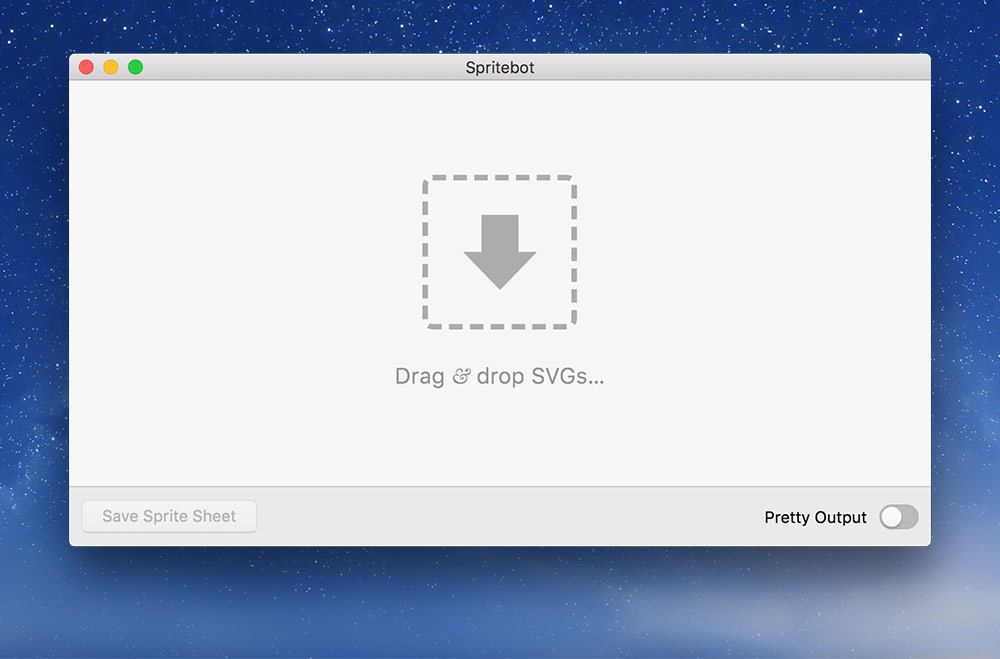
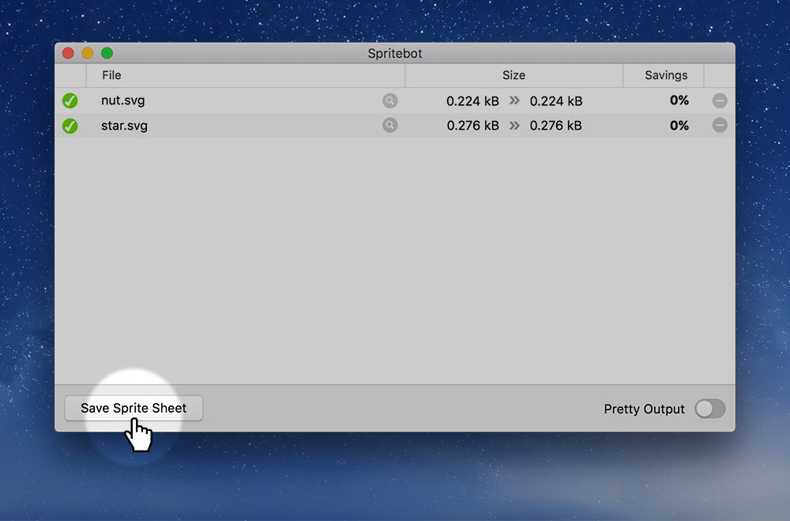

Scalable vector graphics are amazing for creating graphics on the web because they can be embedded into HTML and treated like actual HTML elements.
SVGs are code
SVGs are purely vector graphics and they are written using the XML markup language.
You don’t need a graphical editor to create an SVG, all you need is a text editor.
Writing SVG
To create SVG we can just make a new file in our text editor and give it the extension “.svg”.
Inside the code file, write this:
<svg version="1.1" xmlns="http://www.w3.org/2000/svg">
<!-- Write all the SVG code in here -->
</svg>
It’s also good for browser compatibility to add these attributes: width, height, viewBox.
<svg width="256" height="256" viewBox="0 0 256 256" version="1.1" xmlns="http://www.w3.org/2000/svg">
<!-- Write all the SVG code in here -->
</svg>
Then, inside our SVG we can create graphics.
Here’s a rectangle:
<svg width="256" height="256" viewBox="0 0 256 256" version="1.1" xmlns="http://www.w3.org/2000/svg">
<rect x="10" y="10" width="75" height="50" />
</svg>
Add rounded corners with rx & ry:
<svg width="256" height="256" viewBox="0 0 256 256" version="1.1" xmlns="http://www.w3.org/2000/svg">
<rect x="10" y="10" width="75" height="50" rx="8" ry="8" />
</svg>
Here’s a circle:
<svg width="256" height="256" viewBox="0 0 256 256" version="1.1" xmlns="http://www.w3.org/2000/svg">
<circle cx="175" cy="75" r="75" />
</svg>
cx— centre x coordinatecy— centre y coordinater— radius
We can use CSS in our SVG, but the properties are just a little different.
<svg width="256" height="256" viewBox="0 0 256 256" version="1.1" xmlns="http://www.w3.org/2000/svg">
<style>
rect {
fill: #f33;
}
</style>
<rect x="10" y="10" width="75" height="50" />
</svg>
Use fill to change the shape’s colour.
We can even use classes and IDs on elements.
<svg width="256" height="256" viewBox="0 0 256 256" version="1.1" xmlns="http://www.w3.org/2000/svg">
<style>
.my-rect {
fill: #3f3;
stroke: #000;
}
</style>
<rect class="my-rect" x="10" y="10" width="75" height="50" />
</svg>
Embedding SVG into HTML
SVG can be embedded directly into HTML, which gives us a bunch of extra control.
⋮
<body>
<svg width="256" height="256" viewBox="0 0 256 256">
<rect class="my-rect" x="10" y="10" width="75" height="50" />
</svg>
</body>
⋮
When embedding SVG inside HTML the xmlns and version attributes can be left off.
As soon as the SVG is inside your HTML you can even move the CSS into your separate CSS file.
In main.css:
.my-rect {
fill: #f33;
}
SVG attributes vs. CSS properties
There are a bunch of SVG attributes, like fill that can be written in the SVG as well as in CSS.
When exporting from tools like Adobe Illustrator we should use the SVG presentation attributes to avoid naming collisions.
For example, to change the fill of an element we could use the fill="" attribute like this:
<svg width="256" height="256" viewBox="0 0 256 256">
<rect fill="#f33" x="10" y="10" width="75" height="50" />
</svg>
Or, we could use CSS, like shown above.
The important thing to remember is that if the SVG element has an attribute (like fill="") and also the same CSS property (like fill:) then the CSS will always overwrite. The CSS property is more powerful than the SVG attribute.
Cleaning generated SVG
If you’re using SVG generated by a tool like Adobe Illustrator, Sketch, or Inkscape there’s lots of extra cruft that we don’t need in the files.
We can use some optimization tools to clean up the SVG.
Drop your SVGs into Spritebot that will optimize your SVG and remove the extra stuff.

Making the SVG code pretty
If you use Spritebot to clean the SVG code you can enabled the “Pretty Output” option that will nicely indent and format the SVG for use inside your HTML file.
Links
- Spritebot
- Pocket Guide to Writing SVG
- W3: SVG 1.1 Styling
- W3: SVG properties that can be used in CSS
- SVGOMG
- SVG Basics—How To Create Simple Shapes And Lines
- SVG Basics—Fills And Strokes
- SVG Basics—Creating Paths With Line Commands
- SVG Basics—Creating Paths With Curve Commands
- Sara Soueidan: Understanding SVG Coordinate Systems and Transformations
- Sara Soueidan: Structuring, Grouping, and Referencing in SVG
- SVG and the preserveAspectRatio Property
- SVG NOW for Adobe Illustrator
- SVG Editor
SVG effects
SVG can have lots of effects inside it: hovers, transitions, animations, filters, etc.
As soon as we put our SVG into our HTML document we can apply all the effects in our CSS file.
Adding a hover state
Adding a hover state to an SVG graphic is no different than other HTML elements.
<svg width="256" height="256" viewBox="0 0 256 256">
<rect class="my-rect" x="10" y="10" width="75" height="50" />
</svg>
Then in CSS, we can do this:
.my-rect {
fill: #f33;
}
.my-rect:hover {
fill: #000;
}
Adding transitions
Adding CSS transitions to SVGs are no different than any other HTML element.
.my-rect {
fill: #f33;
transition: all 250ms linear;
}
.my-rect:hover {
fill: #000;
}
Adding animations
There are SVG specific animations, named SMIL, but they are becoming deprecated. So CSS animations are a better way to go.
Just treat your SVG elements just like any other HTML elements.
.my-rect {
animation: rotate-box 250ms linear infinite;
}
@keyframes rotate-box {
0% {
transform: rotate(0);
}
100% {
transform: rotate(360deg);
}
}
Be careful with transform you may need to set transform-origin in pixels because it’s now inside the SVG document space.
Masks
SVGs allow us to mask things. It works really well for creating transparent zones in JPGs or masking text.
<svg width="500" height="500" viewBox="0 0 500 500">
<defs>
<mask id="mask">
<image width="500" height="500" xlink:href="images/mars-mask.png" />
</mask>
</defs>
<image mask="url(#mask)" width="500" height="500" xlink:href="images/mars.jpg" />
</svg>
The mask graphic must be black & white: black being the areas that will be hidden and white the areas that will be shown.
Filters
There are lots of effects that can be applied to SVG vector and bitmap graphics using SVG filters. Some filter examples are: drop shadows, gaussian blur, blend modes, colour transformations and more.
Here’s a quick example of a blur on an SVG element:
<svg width="500" height="500" viewBox="0 0 500 500">
<filter id="blur">
<feGaussianBlur in="SourceGraphic" stdDeviation="5" />
</filter>
<circle cx="170" cy="60" r="50" fill="green" filter="url(#blur)" />
</svg>
You can also add filters to SVGs from Adobe Illustrator, make sure to use the SVG filters specifically.
Effect > SVG Filters
Patterns
Patterns can be defined in SVG using the <pattern> element. Patterns can be applied to anything that accepts a fill.
☛ Check out the text pattern example
Links
- CSS-Tricks: Animating SVG with CSS
- SVG Masks
- Using SVG to shrink your PNGs
- MDN: SVG filters
- MDN: SVG patterns
SVG text
Using text directly inside our SVG has lots of benefits: it can be textured, masked—and is fully accessible.
Inside our SVG graphic we can add a <text> element, like this:
<svg width="500" height="200" viewBox="0 0 500 200">
<text x="0" y="180">Mars!</text>
</svg>
The y coordinate is the baseline of the text. The x coordinate is the left edge of the text, but if you add the attribute text-anchor then it can be the middle or the right.
Here’s how to center text:
<svg width="500" height="200" viewBox="0 0 500 200">
<text x="50%" y="180" text-anchor="middle">Mars!</text>
</svg>
Web fonts for text
SVG <text> that’s embedded directly into HTML can take advantage of web fonts.
<!DOCTYPE html>
<html lang="en-ca">
<head>
⋮
<link href="http://fonts.googleapis.com/css?family=Denk+One" rel="stylesheet">
⋮
</head>
<body>
<svg width="256" height="256" viewBox="0 0 256 256">
<style>
text {
font-family: "Denk One";
}
</style>
<text x="10" y="100">Dinosaurs!</text>
</svg>
</body>
</html>
With the web font linked we can set the font-family on the text element.
Text gradients
We can apply gradients into the text letters using SVG, like this:
<svg width="500" height="200" viewBox="0 0 500 200">
<style>
text {
font-size: 5rem;
fill: url(#text-gradient);
}
</style>
<defs>
<linearGradient id="text-gradient">
<stop offset="0%" stop-color="orange" />
<stop offset="100%" stop-color="red" />
</linearGradient>
</defs>
<text x="10" y="180">Mars!</text>
</svg>
Masking text
Using the <mask> element we can mask out pieces of text to create different effects:
<svg width="500" height="200" viewBox="0 0 500 200">
<style>
text {
font-size: 120px;
font-weight: bold;
}
</style>
<defs>
<mask id="mask">
<image width="500" height="200" xlink:href="images/text-mask.png" />
</mask>
</defs>
<text x="0" y="180" mask="url(#mask)">Splatter!</text>
</svg>
The mask image should be black and white: black areas becoming invisible, white areas visible.
Adding textures to text
We can also add textures to text using SVG and the <pattern> tag. Normally the pattern tag is for making patterns, but if you make the pattern big enough it will only show once.
<svg width="500" height="200" viewBox="0 0 500 200">
<style>
text {
font-size: 200px;
font-weight: bold;
fill: url(#texture);
}
</style>
<defs>
<pattern width="500" patternUnits="userSpaceOnUse" height="200" id="texture">
<image xlink:href="images/mars.jpg" width="800" height="500" />
</pattern>
</defs>
<text x="0" y="180">Mars</text>
</svg>
In the above example the pattern isn’t really a pattern, but instead a large image texture I want to apply to the text.
Links
SVG icons
SVGs are perfect for icons sets in our websites. We can even get their colour to inherit from other CSS colours.
<a class="icon-link" href="#">
<svg class="icon">…</svg>
</a>
If we remove all the fill attributes and CSS from the SVG we can control it with CSS.
svg {
/* `currentColor` allows the color to inherit from the `color` attribute */
fill: currentColor;
}
.icon-link {
color: #33f;
}
.icon-link:hover {
color: #000;
}
Doing the above CSS we can get our SVG colour to match the colour of the HTML element it’s inside.
SVG symbols & reuse
We can reuse SVG graphics multiple times on our website using the <symbol> element. These are just like symbols in Abobe Illustrator.
At the top of our HTML file—the very top—we can define the SVG icons.
⋮
<body>
<!-- Make sure to use `hidden` or `style="display: none"` to hide the icons until use -->
<svg hidden>
<symbol id="symbol-icon" viewBox="0 0 256 256">
<path d="M188.5…" />
</symbol>
</svg>
⋮
After the definition above, further down the HTML document we can use the SVG graphic.
<a class="icon-link" href="#">
<!-- Use the ID above to link this symbol -->
<svg class="icon"><use xlink:href="#symbol-icon"/></svg>
</a>
From a performance perspective this has caching issues because the SVG graphic must be included at the top of every HTML file.
SVG icon sprite sheets
Having to copy-and-paste the SVG code at the top of every SVG file can become cumbersome. It’s much easier to generate an SVG sprite sheet that contains all the icons symbols, save it in a separate file and refer to that file multiple times.
Spritebot can be used to generate SVG sprite sheets by dropping multiple SVG files into the window and saving out the sprite sheet to a file.

After you’ve saved the SVG file (I’d likely name it icons.svg) you can refer to each symbol with the <use> tag, but pointing to the file also.
<a class="icon-link" href="#">
<!-- Notice the path to the icons.svg file -->
<!-- Spritebot will give each icon an ID equal the the filename (without the .svg part) -->
<svg class="icon"><use xlink:href="images/icons.svg#nut"/></svg>
</a>
SVG icons sprite sheets and CSS
When using external SVG sprite sheets be careful about changing colours. If you want to be able to set the colour of the SVG graphics from within CSS, like we did above with :hover, then make sure there are no fill="" presentation attributes within the SVG file itself.
Links
Embedded SVG accessibility
If you’re not embedding the SVG directly into your HTML then the standard accessibility rules apply.
If you are embedding the SVG into your website we want to be able to provide a text alternative, like the <img> tag’s alt attribute.
If the purpose of your SVG is only the <text> inside it, like a fancy heading or something, then no need to go any further.
Titles and descriptions
Inside the SVG element, at the top, we can add two new elements to describe the contents of the image:
<title>— A short description of the image contents.<desc>— A longer, in-depth explanation of the image contents.
<svg width="500" height="200" viewBox="0 0 500 200">
<title>Stegosaurus illustration</title>
<desc>A cute illustration of a stegosaurus cuddling a t-rex toy.</desc>
<!-- Rest of SVG goes here -->
</svg>
Neither of these elements will be visible on screen, but will be used by accessibility tools, like screen readers, and presented to users.
Hiding it completely with ARIA
If you are using the SVG <text> element inside your embedded SVG, but don’t want the text to be announced, because it’s purely decoration, add the aria-hidden="true" attribute to your SVG.
<svg aria-hidden="true" width="500" height="200" viewBox="0 0 500 200">
<text x="0" y="180">Splatter!</text>
</svg>
Links
Video list
- Advanced SVG: writing SVG code
- Advanced SVG: optimizing & cleaning
- Advanced SVG: attributes & CSS
- Advanced SVG: transitions
- Advanced SVG: transform origin with pixels
- Advanced SVG: animations
- Advanced SVG: masking images
- Advanced SVG: text & web fonts
- Advanced SVG: masking text
- Advanced SVG: gradients on text
- Advanced SVG: textures on text
- Advanced SVG: icons
- Advanced SVG: icon symbols
- Advanced SVG: icon sprite sheets
- Advanced SVG: accessibility
Advanced SVG: optimizing with SVGOMG
Supplemental links
- CSS-Tricks: How to Scale SVG
- CSS-Tricks: A Compendium of SVG Information
- MDN: SVG
- SVG on the web — A Practical Guide
- Tips for Creating Accessible SVG
- The SVG Canvas, Coordinate System, And Viewport
- The 4 Slice Scaling Technique for SVG
- CSS-Tricks: How SVG Fragment Identifiers Work
- Smashing Magazine: A Few Different Ways To Use SVG Sprites In Animation
- Smashing Magazine: The Art Of The SVG Filter And Why It Is Awesome
- Masking SVG Animations
- Building Better Interfaces with SVG
- Circulus.SVG: The SVG Circular Menu Generator
- svidget.js
- Animated line drawing in SVG
- SVG Dashed Line Generator
- Better SVG Fallback and Art Direction With The
<picture>Element - How to Make Charts with SVG